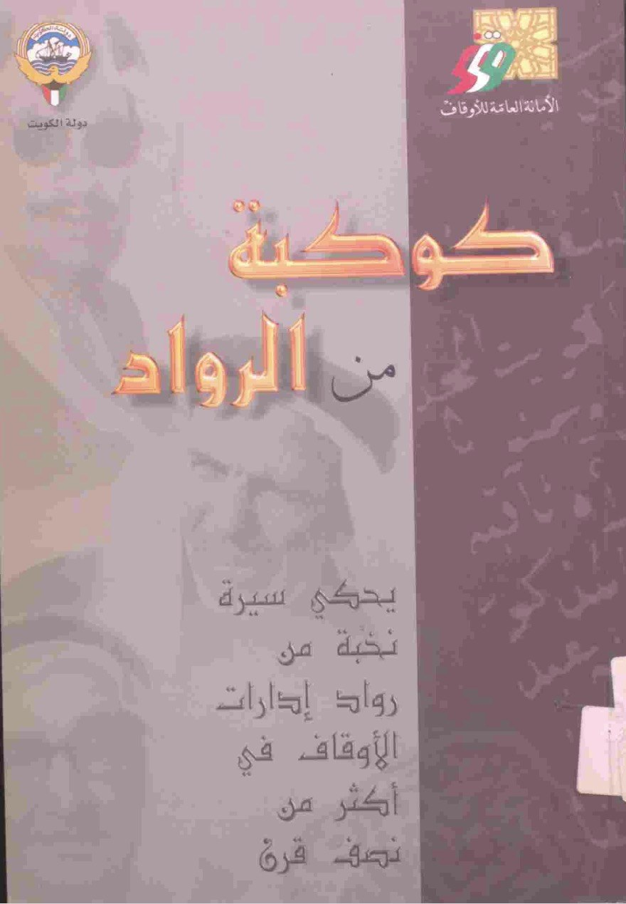
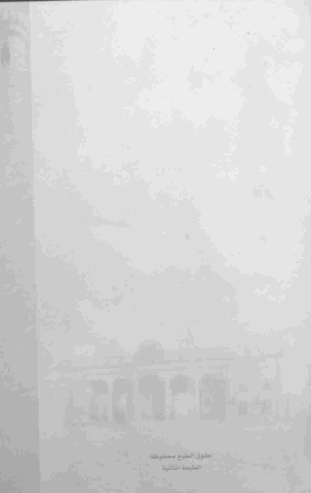

١٨٣٤م إلى ١٩٥٣م، نشر ٢٠٠٢م · صفحات من كتاب «كوكبة من الرواد»، الأمانة العامة للأوقاف، الطبعة الثانية، الكويت، ٢٠٠٢م
كوكبة من الرواد: مسجد القطامي، أسسته ملكة الغانم وجددته دائرة الأوقاف عام ١٩٥٣م
ما هي
١. الصفحة ٥١: «مسجد القطامي: أسسته ملكة بنت محمد غانم الجبر الغانم، عام ١٢٥٠هـ الموافق ١٨٣٤م، لزوجها للصلاة فيه وقد لقب بمسجد القطامي لقربه من منزل عبدالعزيز القطامي». يقع في حي شرق في فريج الشملان أو الرومي بين فريج بوقماز وفريج العسعوسي، خلف عمارة بشر الرومي، وبالقرب من منزل عبدالعزيز القطامي. وسعه أهل الحي أولا من الجهة الغربية ووسعوا محرابه، وجددته دائرة الأوقاف العامة في ١٠ ذي الحجة ١٣٧٢هـ الموافق ٢٠ أغسطس ١٩٥٣م، وتشرف الأمانة العامة للأوقاف على صيانته ضمن مشروع إعادة تأهيل المساجد التراثية. مع صورة المسجد. ٢. الصفحة ٤١، المساجد التي أنشأتها الدائرة داخل مدينة الكويت: مسجد ابن قطامي، ١٠/١٢/١٣٧٢هـ، بتكلفة ٦٦٩٢٤ روبية. ٣. الصفحة ٤٥، أسماء المساجد ومواقعها: مسجد ابن قطامي، في الرومي.
أهميتها
رواية الأمانة العامة للأوقاف عن مسجد القطامي: تأسيسه على يد ملكة الغانم عام ١٨٣٤م، وسبب تسميته بقربه من منزل عبدالعزيز القطامي، وتجديد الدولة له عام ١٩٥٣م.
من المقصود
عبدالعزيز القطامي الذي سمي المسجد بقربه من منزله هو مؤسس العائلة عبدالعزيز القطامي، فقد تزوج ابنه عبدالوهاب لولوة أخت ملكة مؤسسة المسجد (نور فيصل القطامي).
صور الصفحات


ملاحظات
نعرض هنا الصفحات الأولى فقط، ويرى أفراد العائلة بعد تسجيل الدخول كل الصفحات وعددها 7.
المصادر
كوكبة من الرواد: يحكي سيرة نخبة من رواد إدارات الأوقاف في أكثر من نصف قرن، إعداد وفاء حامد العماني، الأمانة العامة للأوقاف، الطبعة الثانية، الكويت، ١٤٢٣هـ / ٢٠٠٢م، ص ٤١ و٤٥ و٥١
كيف كُتب هذا النص: تذكر الصفحة ٤١ تاريخ التجديد ١٠/١٢/١٣٧٢هـ ويقابله ٣١/٨/١٩٥٣م، وتذكر الصفحة ٥١ ٢٠ أغسطس ١٩٥٣م. والصفحة ٤٤ لا تذكر العائلة فلم تعرض.
افتح في الموقع التفاعلي